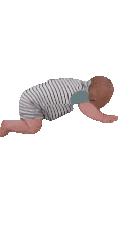
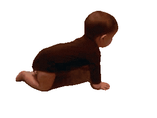
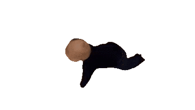

Entrypoint Genesis Babies

Hey there! We've got a real exciting announcement to share with you all today. Introducing Genesis Babies, the newest collectible 8-bit style non-fungible token (NFT) to hit the web3 portal.

Now, you might be wondering, "What the heck is a non-fungible token?" Good question! NFTs are these fancy little digital assets that are built on blockchain technology and are totally unique. Each one is like a one-of-a-kind snowflake, you know?
But enough about that technical stuff. Let's get to the good stuff - the Genesis Babies themselves! These tokens are the grooviest, most far out collectibles you've ever laid eyes on. We've got 100 different variations, each with their own rarity values for their attributes. And the best part? They're being used to gate access to some far out community features on the web3 portal.
But why go through all this fuss for a little ol' collectible? Well, let us tell you, collectibles like Genesis Babies are a real trip for both creators and collectors. For starters, they've got tangible value - creators can make a little cash money by selling them, and collectors get to own some unique and rare digital assets.
But the real value comes from the intangible stuff. For creators, collectibles can be a way to build a community of loyal supporters who are really into their work. This is especially rad for independent creators who might not have the same level of support as the big dogs.
As for collectors, collectibles give them a way to show their support and appreciation for a particular creator or community. Plus, they can connect with other collectors and build a community around their shared interests.
And let's not forget - collectibles keep the internet real. In a world where the internet is often run by big corporations and algorithms, collectibles give creators a way to connect directly with their audience and give collectors a way to support the content they love.
So there you have it - Genesis Babies, the grooviest collectible NFT around. They're a trip for both creators and collectors, and they're helping to keep the internet real. Don't miss out on the opportunity to get your hands on one of these far out tokens.